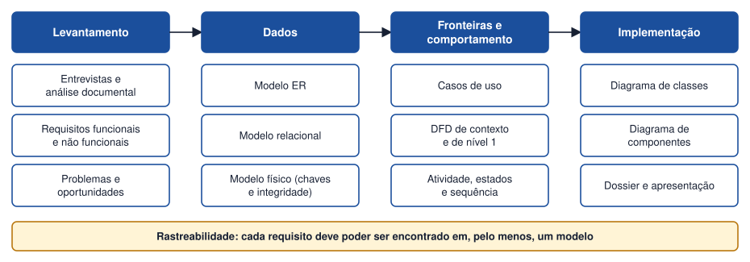

Tema 25 · Implementação e projeto final
Integração dos modelos e apresentação do projeto
Integração dos modelos e apresentação do projeto de análise de sistemas
Os modelos construídos ao longo do manual descrevem o mesmo sistema segundo perspetivas diferentes. O trabalho final consiste em reuni-los num dossier coerente e em apresentá-los a quem os vai avaliar.

Estrutura do dossier
- Introdução: descrição da organização, do problema e dos objetivos.
- Levantamento: técnicas usadas, notas da entrevista, problemas e necessidades.
- Requisitos: lista de requisitos funcionais e não funcionais.
- Modelo de dados: DER, descrição das entidades, modelo relacional, chaves e regras de integridade.
- Modelos de funcionamento: casos de uso, DFD de contexto e nível 1, diagramas de atividade, estados e sequência.
- Modelos de implementação: diagramas de classes e de componentes.
- Conclusão: limitações e possíveis melhorias.
Verificação de coerência
| Verificar | Pergunta |
|---|---|
| Requisitos ↔ casos de uso | Cada requisito funcional está coberto por um caso de uso? |
| Casos de uso ↔ DFD | Os processos do DFD correspondem às funcionalidades dos casos de uso? |
| DER ↔ modelo relacional | Todas as entidades têm tabela? Os N:M foram resolvidos? |
| DER ↔ classes | Cada entidade tem classe? As multiplicidades coincidem com as cardinalidades? |
| DFD ↔ DER | Os armazéns do DFD correspondem a entidades? |
| Nomes | O mesmo conceito tem o mesmo nome em todos os modelos? |
Apresentar e defender
- Comece pelo problema e pelo cliente, não pelos diagramas.
- Percorra os modelos por ordem lógica e explique porquê cada decisão foi tomada.
- Mostre a ligação entre os modelos (como um requisito chega a uma tabela).
- Prepare respostas para perguntas como: «Porque escolheu esta fronteira?», «Porque separou X em duas entidades?», «O que mudaria se o cliente pedisse Y?».
Atividade
Finalização do dossier, apresentação dos diagramas e defesa das opções tomadas
- Reúna todos os modelos do projeto num dossier segundo a estrutura proposta.
- Aplique a tabela de verificação de coerência e corrija as incoerências encontradas.
- Prepare uma apresentação de 10 minutos com os principais diagramas.
- Defenda, perante a turma, três opções de modelação, indicando alternativas consideradas.
Ver proposta de resolução
Proposta de guião de 10 minutos:
| Tempo | Conteúdo |
|---|---|
| 1 min | Organização, problema e objetivos. |
| 2 min | Requisitos principais e fronteira do sistema (casos de uso e DFD de contexto). |
| 3 min | Modelo de dados: DER, tabelas, chaves e integridade. |
| 2 min | Comportamento: DFD de nível 1, atividade, estados e sequência. |
| 1 min | Implementação: classes e componentes. |
| 1 min | Conclusões e melhorias. |
Exemplo de opção a defender: «Criámos a entidade Exemplar separada de Livro porque a biblioteca pode ter várias cópias do mesmo título e é cada cópia que se empresta; assim, o estado (disponível, emprestado, danificado) fica associado ao exemplar e não ao livro. A alternativa, guardar o número de cópias no Livro, impediria saber que cópia está em atraso.»
Em resumo
- Os modelos descrevem o mesmo sistema segundo perspetivas diferentes e têm de ser coerentes.
- O dossier organiza levantamento, requisitos, dados, comportamento e implementação.
- A defesa exige explicar o porquê das opções, não apenas mostrar diagramas.